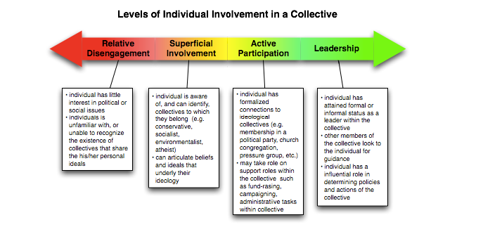

Take a few moments to think about how far liberal democracy has come throughout its history. In many early democracies, the right to vote or hold political office was limited to men who owned a specific amount of property. Over the years, the range of citizens who can take part in democracy has vastly increased.
As you have seen in previous lessons, however, liberal democracy is not without its problems. Some critics in Canada point to what they see as this country’s flawed electoral and parliamentary systems and argue that these systems are ripe for reform. There are also concerns over a growing trend toward political apathy and disengagement, particularly among younger Canadians.
Liberal democracy may need a “tune-up” if it is to continue to function. But, as history shows, one of the strengths of liberal ideology is that it provides mechanisms for change and evolution. As you reach the voting age, Canada’s democracy will truly become your democracy. One of your responsibilities as a citizen will be to determine how democracy in Canada will need to be modified to ensure that it continues to live up to the basic ideals of liberalism.
Human beings are social creatures. It is not our ability to organize and to work together toward a common goal that makes us unique among the creatures that inhabit this world, however. There are multiple examples in the animal world of creatures that work together for the betterment of the whole. Ants and bees live in societies where the roles of workers, drones, and the queen are determined by instinct.
For human beings, however, living in a society requires that they manage the complex interplay between a personal ideology and the ideologies of the collectives to which each individual belongs. You can rationally evaluate the ideals and objectives of the groups to which you belong and adjust your actions accordingly.
Over this course hopefully, you have started to consider the degree to which you will become involved in shaping the society in which you live. You have explored the potential advantages and pitfalls of supporting a collective ideology and evaluated the degree to which your ideals govern your participation in collectives. Have you started to carve your path to become an informed and engaged citizen, prepared to take action to advance your ideals and to find and organize others who share common concerns and goals? What might that next step look like for you?
“To what extent should my actions as a citizen be shaped by an ideology?”

The importance and viability of liberalism continue to be debated in democratic societies. Can an ideology driven by a commitment to open dialogue and progress be embraced as a compelling and viable blueprint for the future?
Noted British philosopher and social advocate Bertrand Russell (1872–1970) observed:
The essence of the Liberal outlook lies not in what opinions are held, but in how they are held: instead of being held dogmatically, they are held tentatively, and with a consciousness that new evidence may at any moment lead to their abandonment.
The Spanish-born philosopher, Jose Ortega y Gasset (1883–1955), was a member of Spain’s liberal and educated upper class. He once said:
Liberalism is the supreme form of generosity; it is the right which the majority concedes to minorities and hence it is the noblest cry that has ever resounded on this planet.
British statesman and prime minister Winston Churchill (1874–1965) explained:
Any man who is under 30, and is not a liberal, has no heart; and any man who is over 30, and is not a conservative, has no brains.
The last part of this course investigates the issue, To what extent are the principles of liberalism viable?
To help you formulate a response to this issue, you have explored how liberal foreign policies have been challenged both past and in this section by current global events. There is no consensus on the viability of liberalism, so attempts to impose this ideology have resulted sometimes in resistance to the principles of liberalism and sometimes in the reformation of liberalism. Exploring domestic and global examples will help you recognize the complexities of liberalism and uncover sources of resistance, to understand how people with an alternative or competing worldviews respond to this ideology.
Finally, if liberalism is to remain a viable ideology, it must have a utilitarian purpose—it must provide a solution to a range of contemporary issues confronting people. Exploring the notion of liberalism as a solution will provide you with the final piece of the puzzle to help you assess the viability of this ideology.
Even though modern liberalism is imperfect, as you have read about in units, many people in liberal democracies consciously or unconsciously assume that the principles of liberalism themselves are beyond criticism. People who live in liberal democracies generally have a bias in favour of such liberal concepts as the worth of every individual, the power of human reason, the limits of a government’s reach into individual lives, and a belief in human progress. This type of conscious or unconscious bias could be considered normal for a person living in a society or a community that is based on a particular liberal democratic ideological system of beliefs. Nonetheless, modern liberalism is not necessarily embraced by all peoples or groups living within liberal democracies or by everyone living outside of liberal democracies.
For example, modern liberalism and its ideological principles can sometimes be challenged by alternative thought, such as environmentalism, Aboriginal collective thought, religious perspectives, and neo-conservatism. Additional challenges to liberal principles can be found in the examples of postmodernism and extremism.
Postmodernism is the period that follows modernism in the fields of art, literature, and philosophy, largely in Western societies. It is also a school of thinking that questions and rejects the principles of modernism and liberalism. Some of the central concepts of modernism, which began during the Enlightenment, include the following:
Modernity, then, is about order, universal truths, reason, and rationality. In this view, by using science and rationality to establish truths, an organized society can emerge. Postmodernism calls into question the central ideas of modernism. It argues that, rather than a process for discovering the truth, modernism has constructed “governing narratives” that tell us stories about our modern society and provide us with ideas around which we can organize society.
Postmodernism claims that most of us are under a “veil of deceit” that hides alternative ways of thinking from us. Postmodernism does not necessarily deny any of the claims of modernism, but it does see many of the “truths” of modernism—and liberal ideology—as mere constructions— as convenient “lies” we tell ourselves so we do not have to think too much. Although many see postmodernism as a mixture of related ideas rather than any sort of organized ideology or belief system, there are recurrent themes in postmodernist thinking. Some of these are:
What is objectionable, what is dangerous about extremists is not that they are extreme, but that they are intolerant. The evil is not what they say about their cause, but what they say about their opponents.
—Robert F. Kennedy, quoted in Thomas A. Hopkins, ed., Rights for Americans: The Speeches of Robert F. Kennedy (Indianapolis, IN: Bobbs-Merrill, 1964)
Unlike other terms related to the subject of ideology, such as democrat, socialist, or anarchist, the term extremist is normally used to refer only to other people, usually in a pejorative sense. Whereas someone might readily call himself or herself an environmentalist, those who are considered extremists by others generally do not see themselves as extremists.
In common parlance, extremism refers to a belief system that is outside the mainstream spectrum of beliefs, and it may advocate actions that are considered socially or morally unacceptable, such as the violent targeting of those perceived as innocent civilians. Sometimes the mainstream absorbs extremist views, however, and views that were considered extreme in one era become conventional in another (for example, women’s right to vote and desegregation). Thus the judgment of “extremists” depends entirely on one’s point of view. A group that violates the moral codes of a segment of society as a means to an end is judged as “extremist” by that social segment, but not
necessarily by others.
Can you think of other ideas related to individual or collective rights that are now part of liberal democracies but were once considered extreme?
Extremism is also used by some people to characterize economic activities that strictly adhere to a set of principles despite their perceived adverse effects on a population. For example, during the Cold War, the economic practices of communist countries were seen as extremist by the United States government and some other free-market countries.
More recently, critics of free-market policies have claimed that some forms of capitalism have become extremist forms of economics. Canadian author Naomi Klein sees the ideas of economist Milton Friedman of the Chicago School of Economics as central to this “economic extremism”:
“Friedman dreamed of depatterning societies, or returning them to a state of pure capitalism, cleansed of all interruptions—government regulations, trade barriers and entrenched interests.”
- Excerpted from The Shock Doctrine: The Rise of Disaster Capitalism by Naomi Klein, p. 50. Copyright © 2007 Naomi Klein. Reprinted by permission of Knopf Canada.)
What are some other contemporary issues that will challenge liberalism now and into the future? Just how capable of being effective (viable) are liberal values when dealing with current issues? Following are examples of current challenges for liberal values...what else might be challenging to liberal democracy?
Authoritarian populists have won elections across a large swath of Western liberal democracies. Populist leaders have formed government through free and (mostly) fair elections by riding a wave of popular disaffection with the status quo. But once in power, these governments have gone on to dismantle the very institutions and conventions that help keep liberal democratic principles in place.
So how are we to confront this paradox wherein liberal democracy serves a growing and undemocratic illiberalism? How do we strike a balance between the rights of individuals and the popular will? And if we can't figure this out, are the best days of the liberal democratic tradition long gone?
In the early 1990s, populism in Europe was mostly a vestige of a bygone era of authoritarianism. It went largely unnoticed and rarely figured into broader conversations about political futures. But in the last ten years, there's been a resurgence of populists, and that resurgence is upending a widely-shared belief among political scientists that at some point a democracy becomes stable enough that we can count on a nation never sliding back into a less open system.
Political scientist, Yascha Mounk, has studied the shifting interest in favour of authoritarian, less-democratic governance — not only in Europe but in the United States as well. He says among Americans born in the 1930s and 1940s, over two-thirds believe that living in a democracy is absolutely central. But that figure drops to one-third among Americans born in the 1980s.
He points to a similar trend throughout Europe and says the trends threaten not only democratic institutions but push at the very heart of liberal values.
"It is survival of a democratic system itself because you wind up getting to a place as we have gotten to in Venezuela, and in Hungary, and in Turkey, and in Russia, and in many different places around the world, in which it is no longer possible to replace a democratically-elected leader through democratic means precisely because the courts are no longer independent, the media is no longer free... and so people who are populists do wind up destroying democracy."
The world is in turmoil. From Russia, Turkey, and Egypt to the United States, authoritarian populists have seized power. As a result, democracy itself may now be at risk.
Two core components of liberal democracy—individual rights and the popular will—are increasingly at war with each other. As the role of money in politics soared and important issues were taken out of public contestation, a system of “rights without democracy” took hold. Populists who rail against this say they want to return power to the people. But in practice, they create something just as bad: a system of “democracy without rights.” The consequence is that trust in politics is dwindling. Citizens are falling out of love with their political system. Democracy is wilting away.
Drawing on vivid stories and original research, Mounk identifies three key drivers of voters’ discontent: stagnating living standards, fear of multiethnic democracy, and the rise of social media.
To reverse the trend, politicians need to enact radical reforms that benefit the many, not the few.
Extremism: the holding of extreme political or religious views; fanaticism
Postmodernism: skepticism toward the values of modernism; rejection of the role or ideology of maintaining political power
The rise of populist movements and authoritarianism in some parts of the world has challenged liberal values and institutions. These movements often reject the liberal consensus and promote nationalist or illiberal ideologies, which can undermine the principles of liberalism.
The viability of liberalism depends on the ability to address and adapt to the complex social, economic, and political challenges of the present and future. It requires ongoing debates, reforms, and a willingness to strike a balance between individual rights and collective well-being. The success of liberalism will ultimately depend on its ability to provide solutions that promote both freedom and equality in an ever-changing world.
You may want to access the following additional resources.